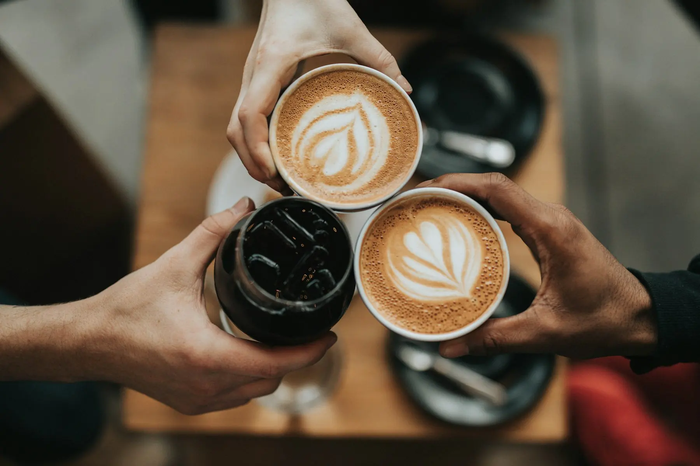
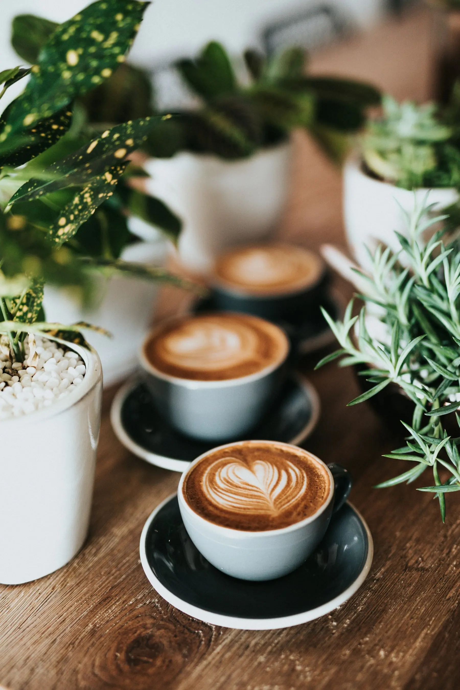

MOENDA

Torrado na terça. Na sua xícara na quinta.
Café especial de pequenos produtores, torrado em lotes de 5 kg no fundo da loja, na Rua Exemplo.
5 kgpor lote de torra
72 hdo torrador ao balcão
4origens na casa
Escolha a torra
Arraste para comparar
- Notas
- Melhor em
ClaraMédiaMédia-escuraEscura
Café fresco todo mês, sem sair de casa.
Escolha o tamanho, a frequência e se quer em grão ou moído. Pause quando quiser.

“O melhor café de Caxias é aquele que você toma sem açúcar e sem pressa.”
Cartaz pendurado no balcão
Passa aqui.
- Seg a sex
- 7h30 às 19h
- Sábado
- 8h às 17h
- Domingo
- fechado (a gente torra)
Rua Exemplo, 312 · Centro · Caxias do Sul, RS